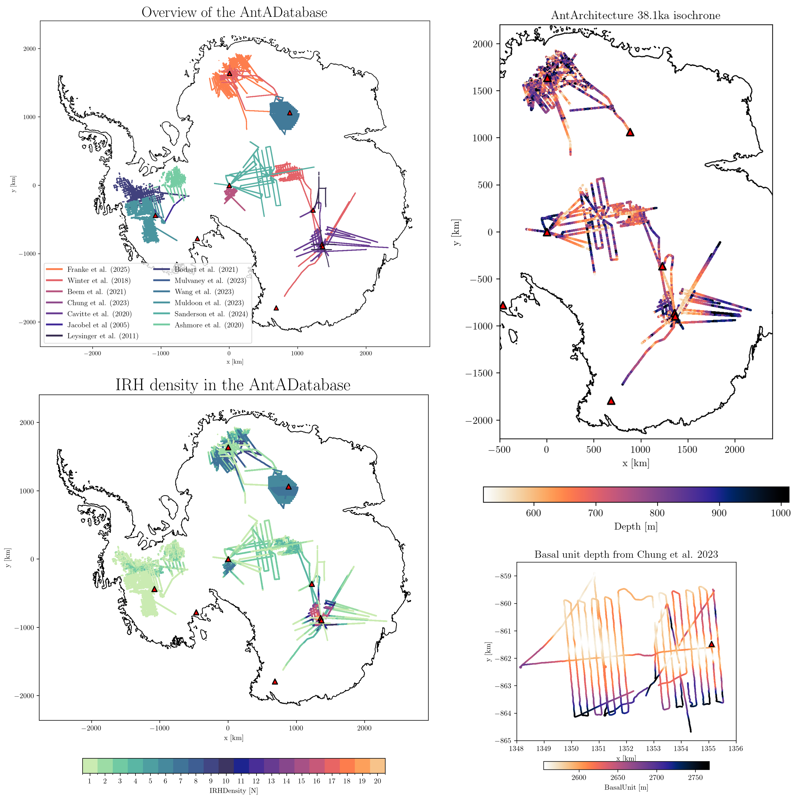

Welcome to AntADatabase#
AntADatabase is Python-powered SQL database providing efficient access to Internal Reflecting Horizons (isochrones) data across Antarctica. Designed for ice sheet modelers, it offers fast, memory-efficient data structures to constrain models with published IRH data.

Example visualizations created using the anta_database plotting functionsOverview#
The AntADatabase project consists of two distinct but complementary components:
AntADatabase dataset#
A comprehensive compilation of Internal Reflecting Horizons (isochrones) across Antarctica
The AntADatabase is a curated collection of all published isochrone datasets, standardized into a single, uniform format. This dataset is designed specifically for ice sheet modelers and researchers who need consistent, high-quality IRH data to constrain their models.
Key characteristics:
Comprehensive: Aggregates data from multiple published sources into one cohesive dataset
Standardized: All data converted to consistent HDF5 format with uniform variable naming
Curated: Maintained by the AntArchitecture action group
Growing: Continuously updated as new datasets are published
anta_database Python Package#
A Python toolkit for accessing and analyzing the AntADatabase
The anta_database an open-source Python package provides the tools to efficiently query, filter, visualize, and process the AntADatabase dataset. It’s built for performance and ease of use, with SQLite indexing for fast data access.
Key features:
SQLite Indexing: Fast querying by dataset, institute, project, age, region, basin, variable, or flight ID
Memory Efficient: Lazy data generation to handle large datasets without loading everything into memory
Visualization Tools: Built-in plotting functions for quick data exploration on Antarctic maps
Data Processing: Tools to compile and index your own datasets
Included Datasets#
The AntADatabase currently includes the following published datasets:
Ashmore et al. 2020, 10.1029/2019GL086663
BEDMAP1: Lythe et al. (2022), 10.5285/f64815ec-4077-4432-9f55-0ce230f46029
BEDMAP2: Fretwell et al. (2022), 10.5285/2fd95199-365e-4da1-ae26-3b6d48b3e6ac
BEDMAP3: Frémand et al. (2022), 10.5285/91523ff9-d621-46b3-87f7-ffb6efcd1847
Beem et al. 2021, 10.15784/601437
Bodart et al. 2021, 10.5285/F2DE31AF-9F83-44F8-9584-F0190A2CC3EB
Bodart and Sutter 2025a, 10.5281/zenodo.17348976
Bodart and Sutter 2025b, 10.5281/zenodo.17348094
Cavitte et al. 2020, 10.15784/601411
Chung et al. 2023, 10.1594/PANGAEA.957176
Franke et al. 2025, 10.1594/PANGAEA.973266
Jacobel and Welch 2005, 10.7265/N5R20Z9T
Leysinger-Vieli et al. 2011, 10.5281/zenodo.15516203
Muldoon et al. 2023, 10.15784/601673
Mulvaney et al. 2023, 10.1594/PANGAEA.963470
Napoleoni et al. 2026, 10.5194/tc-20-2793-2026
Sanderson et al. 2024, 10.5285/cfafb639-991a-422f-9caa-7793c195d316
Siegert and Payne 2024, 10.1002/esp.1238
Wang et al. 2023, 10.1594/PANGAEA.958462
Winter et al. 2018, 10.1594/PANGAEA.895528
Yan et al. 2025, 10.5281/zenodo.14962526
Data Variables#
The standardized dataset includes the following variables (when available in source data):
Coordinates:
PSX,PSY(Polar Stereographic coordinates)Geometry:
Distance(along-track distance),ICE_THK(ice thickness),SURF_ELEV(surface elevation),BED_ELEV(bed elevation)IRH Data:
IRH_DEPTH(Internal Reflecting Horizon depth),IRH_NUM(number of traced IRHs per point)
Getting Started#
To learn how to use the anta_database Python package, proceed to the Quick Start guide.
For advanced usage, including database compilation and management, see the Advanced section.
Tutorial#
Acknowledgments#
This project is developed as part of a PhD project funded by the Swiss National Science Foundation (grant no. 211542, Project CHARIBDIS).
Important: Any data used through this database must be cited at source using the DOI provided in the metadata. If you use the anta_database package in your work, please cite this repository so others can discover and benefit from this tool.